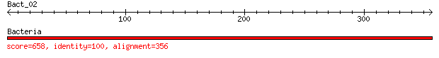

bitscore colors: <40, 40-50 , 50-80, 80-200, >200
 BLASTN 2.2.31+
Reference: Zheng Zhang, Scott Schwartz, Lukas Wagner, and Webb
Miller (2000), "A greedy algorithm for aligning DNA sequences", J
Comput Biol 2000; 7(1-2):203-14.
Database: Bacteria
1 sequences; 23,419 total letters
Query= Bact_02
Length=356
Score E
Sequences producing significant alignments: (Bits) Value
Bacteria 658 0.0
>Bacteria
Length=23419
Score = 658 bits (356), Expect = 0.0
Identities = 356/356 (100%), Gaps = 0/356 (0%)
Strand=Plus/Minus
Query 1 GTGGCCCGTATAGCAGGCATTAACATTCCTGATCAAAAACATACTGTAATCGCTTTAACA 60
||||||||||||||||||||||||||||||||||||||||||||||||||||||||||||
Sbjct 783 GTGGCCCGTATAGCAGGCATTAACATTCCTGATCAAAAACATACTGTAATCGCTTTAACA 724
Query 61 TCGATTTACGGAATTGGTAAAACTCGCTCCCAAGCCATTTGTGCGGCGGCGGGTATTGCT 120
||||||||||||||||||||||||||||||||||||||||||||||||||||||||||||
Sbjct 723 TCGATTTACGGAATTGGTAAAACTCGCTCCCAAGCCATTTGTGCGGCGGCGGGTATTGCT 664
Query 121 GAACATGTTAAGATCAGCGAGCTGTCTGAAGAGCAAATTGATAAGCTGCGTGACGAAGTT 180
||||||||||||||||||||||||||||||||||||||||||||||||||||||||||||
Sbjct 663 GAACATGTTAAGATCAGCGAGCTGTCTGAAGAGCAAATTGATAAGCTGCGTGACGAAGTT 604
Query 181 GCTAAATACGTTGTAGAAGGCGATTTGCGTCGTGAAGTAACCCTGAGCATCAAACGTCTG 240
||||||||||||||||||||||||||||||||||||||||||||||||||||||||||||
Sbjct 603 GCTAAATACGTTGTAGAAGGCGATTTGCGTCGTGAAGTAACCCTGAGCATCAAACGTCTG 544
Query 241 ATGGATCTTGGTACTTATCGTGGTTTACGTCACCGTCGTGGTCTACCTGTTCGCGGCCAG 300
||||||||||||||||||||||||||||||||||||||||||||||||||||||||||||
Sbjct 543 ATGGATCTTGGTACTTATCGTGGTTTACGTCACCGTCGTGGTCTACCTGTTCGCGGCCAG 484
Query 301 CGTACTAAGACCAATGCACGTACCCGTAAGGGTCCACGTAAGCCGATCAAGAAATA 356
||||||||||||||||||||||||||||||||||||||||||||||||||||||||
Sbjct 483 CGTACTAAGACCAATGCACGTACCCGTAAGGGTCCACGTAAGCCGATCAAGAAATA 428
Lambda K H
1.33 0.621 1.12
Gapped
Lambda K H
1.28 0.460 0.850
Effective search space used: 7980764
Query= Bact_01
Length=390
Score E
Sequences producing significant alignments: (Bits) Value
Bacteria 721 0.0
>Bacteria
Length=23419
Score = 721 bits (390), Expect = 0.0
Identities = 390/390 (100%), Gaps = 0/390 (0%)
Strand=Plus/Minus
Query 1 ATGGCAAAAGCACCTATTCGTGCACGTAAGCGTGTAAGAAAGCAAGTCTCTGACGGTGTG 60
||||||||||||||||||||||||||||||||||||||||||||||||||||||||||||
Sbjct 411 ATGGCAAAAGCACCTATTCGTGCACGTAAGCGTGTAAGAAAGCAAGTCTCTGACGGTGTG 352
Query 61 GCTCATATCCATGCTTCTTTCAACAACACCATCGTGACCATTACTGACCGTCAGGGTAAC 120
||||||||||||||||||||||||||||||||||||||||||||||||||||||||||||
Sbjct 351 GCTCATATCCATGCTTCTTTCAACAACACCATCGTGACCATTACTGACCGTCAGGGTAAC 292
Query 121 GCCCTGGGTTGGGCAACTGCCGGTGGTTCCGGTTTCCGTGGTTCTCGTAAATCTACTCCG 180
||||||||||||||||||||||||||||||||||||||||||||||||||||||||||||
Sbjct 291 GCCCTGGGTTGGGCAACTGCCGGTGGTTCCGGTTTCCGTGGTTCTCGTAAATCTACTCCG 232
Query 181 TTTGCAGCTCAGGTTGCAGCAGAGCGCTGTGCCGAAGCAGTGAAAGAATACGGAATTAAG 240
||||||||||||||||||||||||||||||||||||||||||||||||||||||||||||
Sbjct 231 TTTGCAGCTCAGGTTGCAGCAGAGCGCTGTGCCGAAGCAGTGAAAGAATACGGAATTAAG 172
Query 241 AACCTGGAAGTTATGGTTAAAGGACCTGGTCCTGGCCGCGAGTCAACTATTCGAGCGTTA 300
||||||||||||||||||||||||||||||||||||||||||||||||||||||||||||
Sbjct 171 AACCTGGAAGTTATGGTTAAAGGACCTGGTCCTGGCCGCGAGTCAACTATTCGAGCGTTA 112
Query 301 AATGCGGCAGGTTTCCGCATTACTAACATTACTGATGTGACTCCGATCCCTCATAACGGT 360
||||||||||||||||||||||||||||||||||||||||||||||||||||||||||||
Sbjct 111 AATGCGGCAGGTTTCCGCATTACTAACATTACTGATGTGACTCCGATCCCTCATAACGGT 52
Query 361 TGTCGTCCACCTAAAAAACGTCGCGTTTAA 390
||||||||||||||||||||||||||||||
Sbjct 51 TGTCGTCCACCTAAAAAACGTCGCGTTTAA 22
Lambda K H
1.33 0.621 1.12
Gapped
Lambda K H
1.28 0.460 0.850
Effective search space used: 8776500
Database: Bacteria
Posted date: Mar 29, 2017 4:06 PM
Number of letters in database: 23,419
Number of sequences in database: 1
Matrix: blastn matrix 1 -2
Gap Penalties: Existence: 0, Extension: 2.5